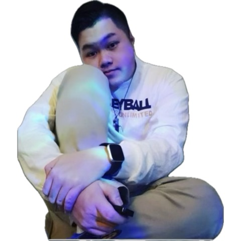

Manting, born on June 20th, 1998 making him 27 years old currently as of November 2025
He is Hmong and a graduate student in the Master's in Social Science Program with an Option in College Student Equity and Success (btw he is in a masters program)
This is his first semester in CRTL+K! he knew people who were previously in the club but they graduated. His Ult group is GOT7💚🐤, but he stans other groups too but GOT7 will always be his #1. His bias is Mark and his bias wrecker is Jinyoung. He mentions that It's difficult to fully stan many groups nowadays but if he hears something he likes, he will add it to his playlist. He has a 2,400+ songs🎵 playlist on YouTube that is filled with so many genres: kpop, hip-hop, rap, indie, nerdcore, choral, Thai, Japanese, Hmong, Chinese, Spanish, ballad, Filipino


In 2011, Toyota partnered with Miku to promote their car.
They had an ad with the appearence of
Miku where she drove the car. A custom wrap for the car was also created as well as multiple promotional events.


During the Fortnite Festival season 7 Miku themed cosmetics were released. This season brought Miku skins, emotes,
and instruments. Players were able to unlock these items via the item shop and the Festival pass.